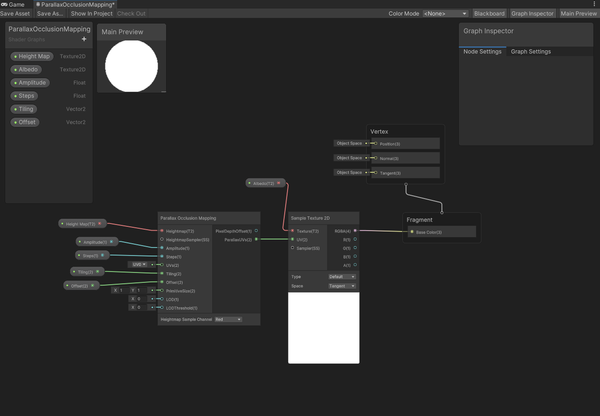

The concept was simple yet ambitious: to create a turn-based RPG with strategic
depth and immersive narrative. The heart of any RPG, of course, is its battle system. This was where I decided to
start, diving deep into the mechanics that would drive player engagement and challenge.
Crafting the Battle System
The turn-based battle system is a hallmark of classic RPGs. It's a dance of strategy, where every move counts, and
players must think several steps ahead. My vision was to recreate the traditional system from scratch to experience the
development process firsthand.
- Character Stats: Characters in the game were designed with physical and magic abilities. This
ensured that players had to think critically about which ability to use in different scenarios, adding a layer of
strategy to each encounter.
- Adaptive AI: The enemies weren't pushovers. I made sure to make them select options based on the
current situation in battle. Reacting to the players health and physical stats as the battle progressed.
The Visual Hurdle
While the mechanics of the battle system were coming together, there was a significant challenge looming overhead:
the lack of a concrete visual structure. Visuals are the soul of a game, providing the first impression and
continuously shaping the player's experience. Without a clear visual blueprint, developing the game became akin to
navigating a maze blindfolded.
Lessons Learned
While the game remains unfinished, the journey was far from a wasted effort. It taught me the invaluable lesson of
the importance of a clear visual structure in game development. A cohesive visual design not only enhances the
player's experience but also streamlines the development process, providing a clear roadmap for the team.
In the future, I'm determined to approach game development with a more holistic view, ensuring that both mechanics
and visuals are given equal importance from the outset.
Every challenge faced is a lesson learned. Embrace the journey,
for it is filled with opportunities for growth and innovation.